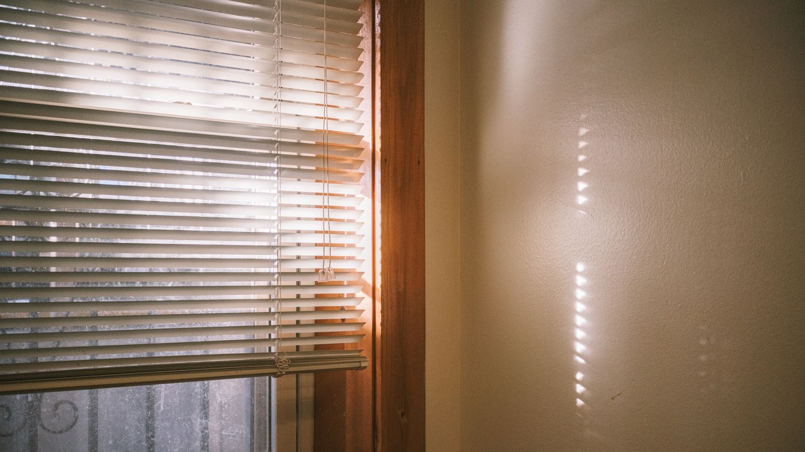

Рулонные шторы
Цельное полотно, большой выбор тканей — от лёгких до полностью светонепроницаемых. Чаще всего крепятся прямо на раму.
от 800 ₽ за м²по сайту 2014 года · уточняется
Выберите изделие и укажите размеры — сайт покажет ориентир по цене, а заявка на замер придёт мастеру в Telegram.

Это концепт. С вашими фото и правками будет ещё лучше
Собственное производство и монтаж — по описанию на текущем сайте.
Цельное полотно, большой выбор тканей — от лёгких до полностью светонепроницаемых. Чаще всего крепятся прямо на раму.
Ткань из полиэстера или пластик; подходят для больших проёмов. Монтаж на стену или потолок.
Изготовление сеток под размер окна.
Алюминий, пластик или дерево: долговечные, быстро открывают весь проём поворотом ламелей.
Описания — по статье «Как правильно выбрать жалюзи» и разделу «Услуги» текущего сайта. Ткани и комплектующие, по словам мастерской, — «PROMA», «NORTEX», «BAUSET»; собственное производство с 2012 года.
Четыре шага — и заявка у мастера в Telegram. Это рабочий макет: попробуйте ввести размеры своего окна.
Выберите изделие — на следующем шаге посчитаем ориентир по размерам.
Примерно, в сантиметрах — точные размеры снимет замерщик. Ориентир считается по ценам «от» с текущего сайта (2014 год).
Мастерская работает пн–пт, 9:00–18:00. Выберите день — мастер перезвонит и подтвердит время.
Так это будет работать: мастер получает заявку с изделием, размерами и ориентиром по цене и перезванивает, чтобы договориться о замере. Сейчас это макет — ничего не отправлено и не сохранено.
Порядок работы — из статьи «Как сделать заказ?» на текущем сайте.
Тип изделия, примерные размеры окна и удобный день — всё в одной заявке, без звонка.
Сотрудник приезжает, показывает образцы тканей, делает замеры и считает заказ. По сайту выезд бесплатный — условия уточняются.
По сайту: предоплата 50 %, остальное — после установки; срок изготовления 5–7 дней; монтаж от 150 ₽. Условия 2014 года — уточняются.
Здесь будут фото образцов тканей и установленных штор мастерской.
Только то, что опубликовано на сайте мастерской.
На текущем сайте (2014 год): от 800 ₽ за м², вертикальные жалюзи — от 580 ₽ за м², москитные сетки — 500 ₽ за штуку, монтаж — от 150 ₽. Актуальные цены уточняются.
По сайту — бесплатно, даже если заказ не оформлен. Актуальность условия уточняется.
По сайту: жалюзи — 5–7 дней. Сроки для других изделий уточняются.
По сайту: 50 % при заказе, остальное — после установки. Уточняется.
Омск, 1-я Индустриальная, 1Б. Пн–пт, 9:00–18:00.
Пн–пт, 9:00–18:00
В Яндекс Картах у мастерской указан другой номер — +7 (913) 630-33-43; какой основной — уточняется.